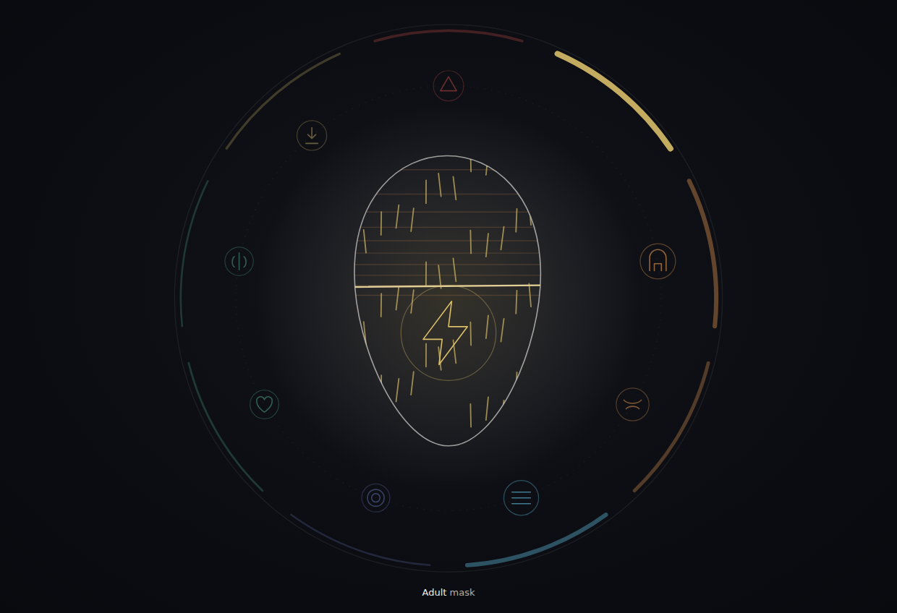
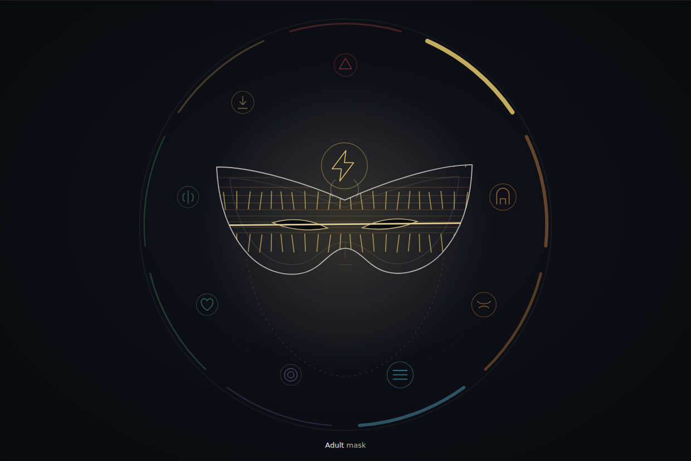
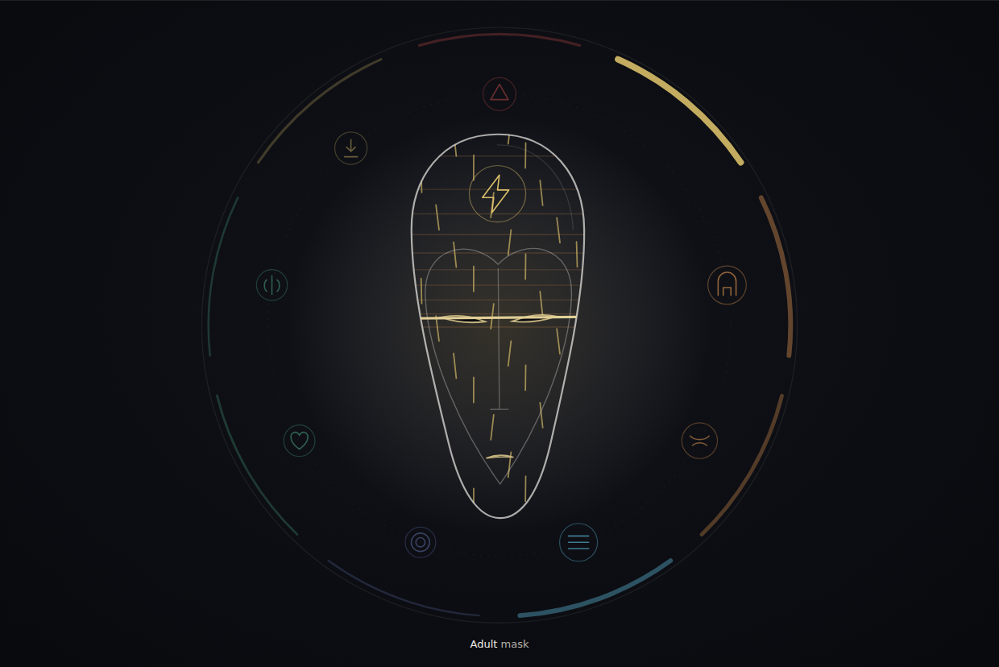
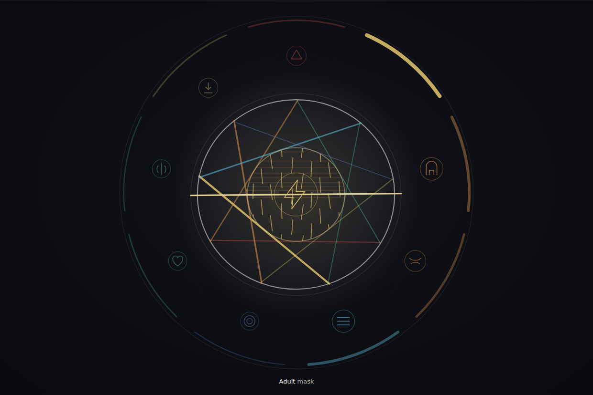
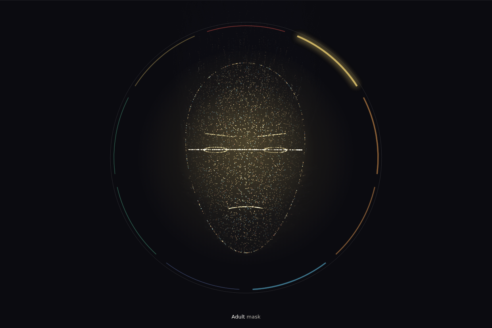
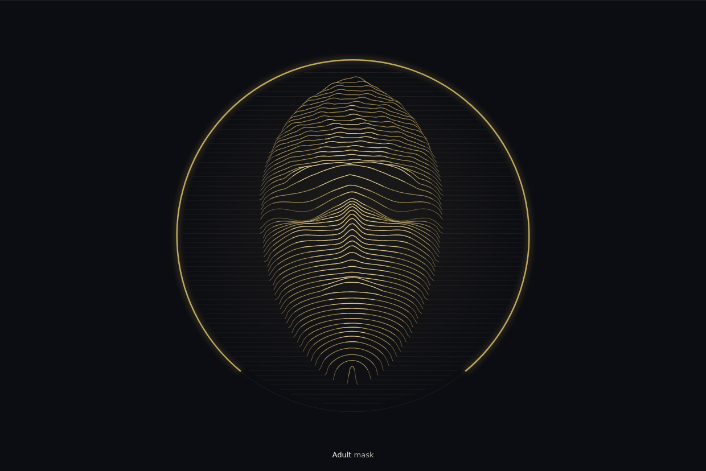
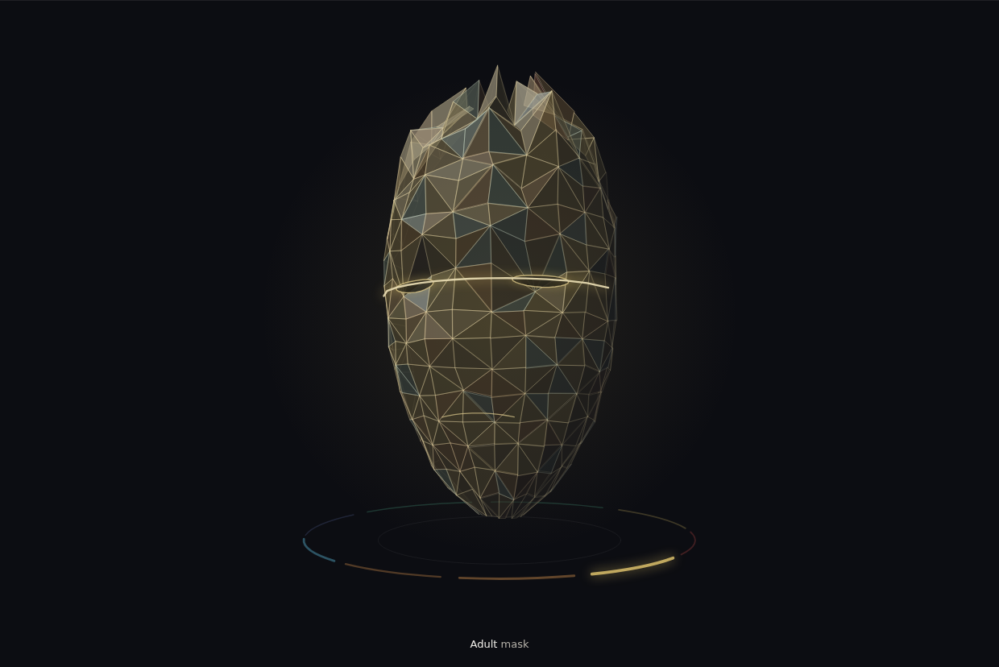

Seal won. Three more ways to wear it.
Every version below keeps the Seal’s mechanic: the heaviest pattern’s icon takes the centre with its own drawn motion, and the other eight orbit at their weight. What changes is the centre piece. All read the same toy numbers, so press the four examples or drag a weight and compare.
Mockups only. Nothing here reads a profile or touches the app. On any page, keys 1 to 4 pick an example and C cycles them.
Seal, and three variations
The chosen direction first, then three new centre pieces: two real masks and one with no face at all. See all four in all four states


Seal
The original. The face outline and its mark in ring icons, the lead’s icon in the centre with its own motion, the other eight in orbit.
Open seal
Half mask
A real half mask, worn at the eyes. The lead’s icon is the crest at the brow, the motion runs inside the band, the eye openings take the expression.
Open half mask
Long mask
The tall carved mask of ritual theatre. The lead’s icon on the brow, the motion down the length of it, the slit eyes and the mouth take the set.
Open long mask
Iris
No face. Nine blades, one per axis, close and open around the lead’s icon: fear shuts the opening down, shock throws it wide.
Open irisEarlier directions, not chosen
Kept for reference, from the first round of four.

Charge cloud
A face held in a cloud of points. The lead sets the force on every point.
Open charge cloud
Relief scan
A carved face read in scan lines. The lead sets the expression.
Open relief scan
Glass
Faceted glass turning slowly. Fear folds it in, shock breaks it apart.
Open glass